Odai, Mie: things to do, food and stays
Odai · Mie
Odai
Highlighted on the Mie map.
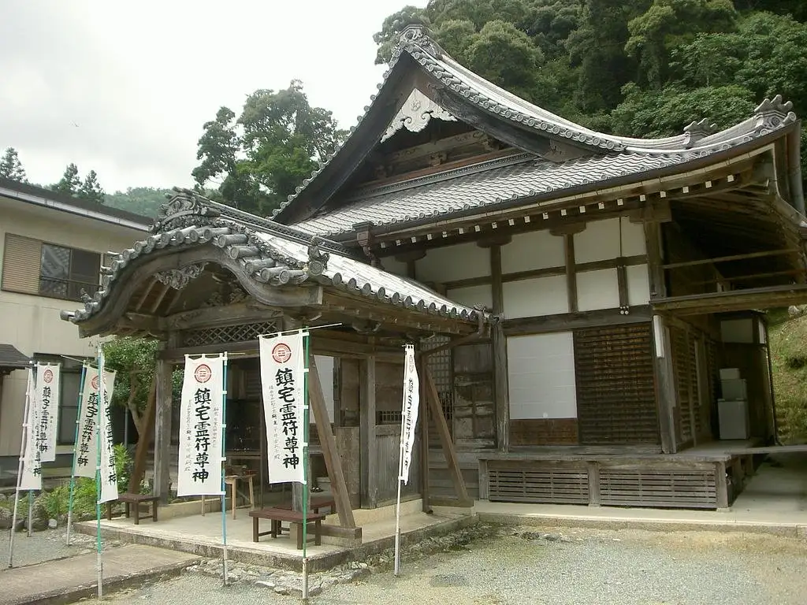
Stay
フェアフィールド･バイ･マリオット･三重奥伊勢おおだい
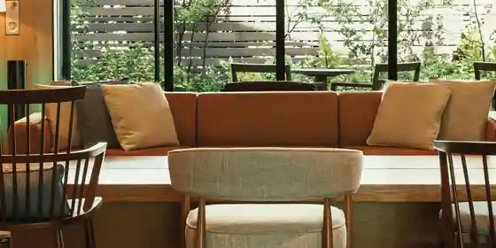
Feafirudo Feafirudo Bai Bai Mariotto Mariotto Mie Oku Ise Odai
奥伊勢フォレストピア宮川山荘
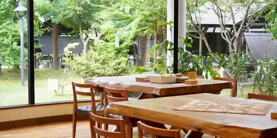
Oku Ise Foresutopia Miyagawa Sanso
フェアフィールド・バイ・マリオット・三重奥伊勢おおだい
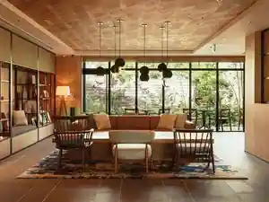
Feafirudo Bai Mariotto Mie Oku Ise Odai
宿屋まてまて
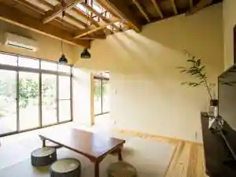
Yadoya Matemate
Inn in Shitamate, Odai with family-friendly stays.
キャンプスタイルの宿夢楽
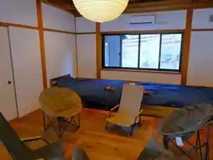
Kyanpusutairu No Yado Yume Raku
体験型民宿 HOSTEL Bion
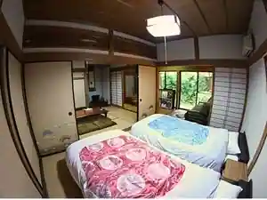
Taiken Kata Minshuku HOSTEL Bion
溯渓寮
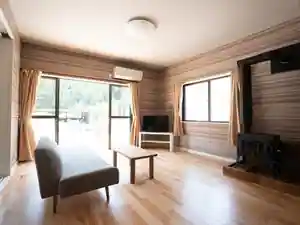
So Kei Ryo
キャンプスタイルの宿やまがら
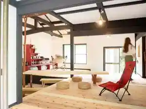
Kyanpusutairu No Yado Yamagara
Dining
一冨士
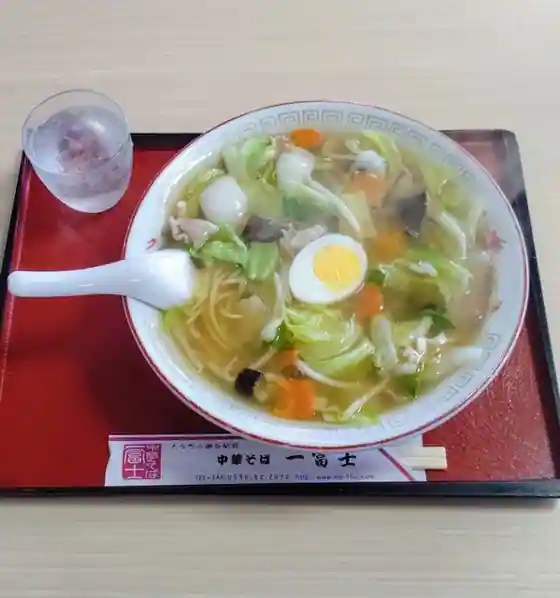
Ichi Fuji
BOUQUET
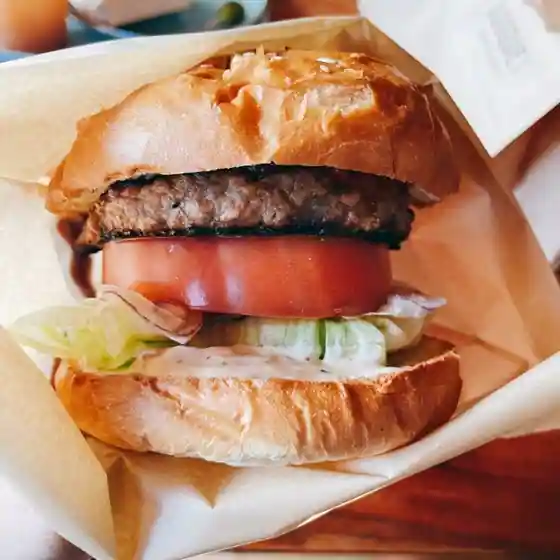
BOUQUET
よし兵衛
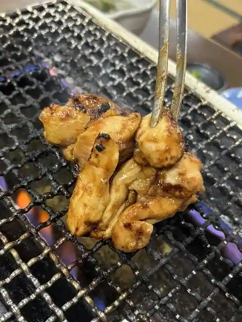
Yoshi Be
まごころ屋台
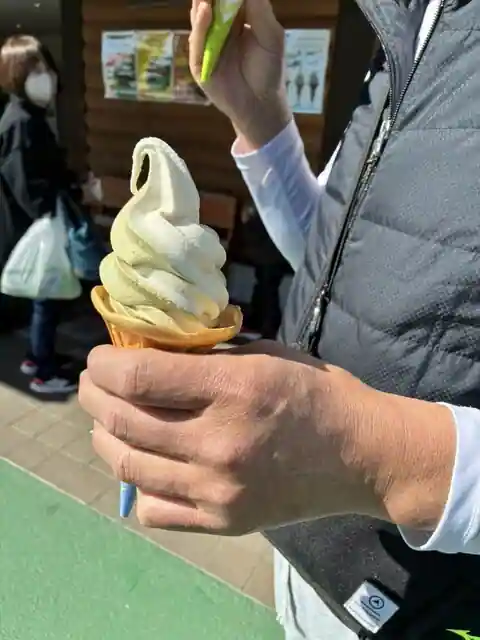
Magokoro Yatai
アンジュ
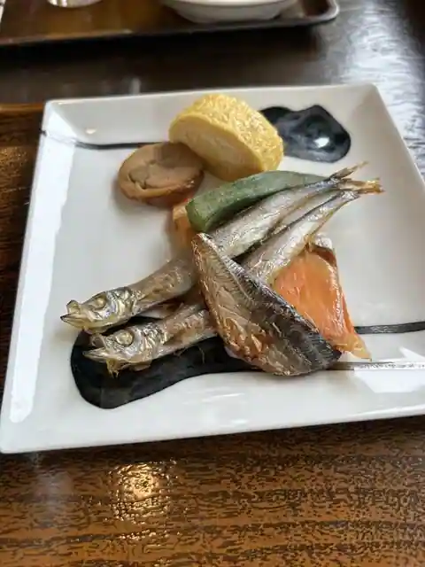
Anju
まごころ食堂
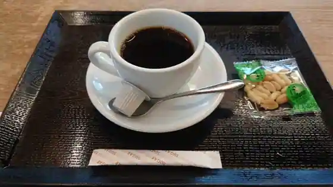
Magokoro Shokudo
月壺
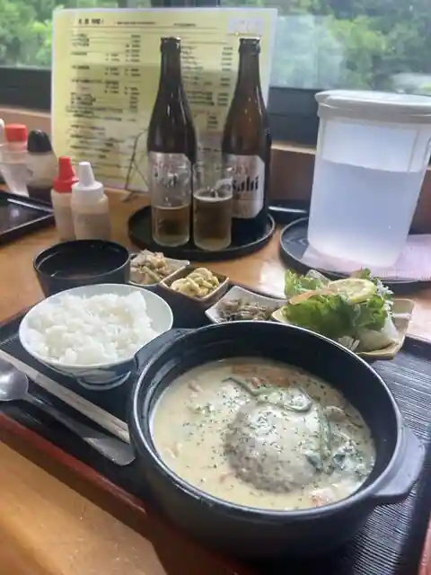
Gatsu Tsubo
奥伊勢パーキングエリア（下り線）フードコート
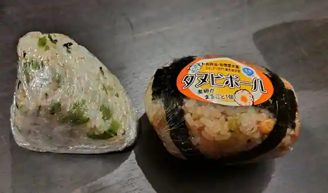
Oku Ise Pakingueria (Kudari Sen) Fudokoto
つじ萬
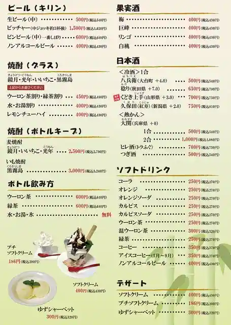
Tsuji Man
道の駅 奥伊勢おおだい
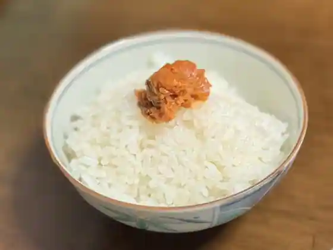
Michi No Eki Oku Ise Odai
清流茶屋
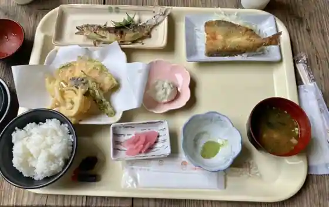
Seiryu Chaya
三瀬谷 大黒屋 大台本店
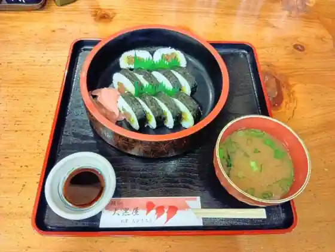
Mitsuse Tani Daikokuya Odai Hon
森のお菓子屋 スピカ
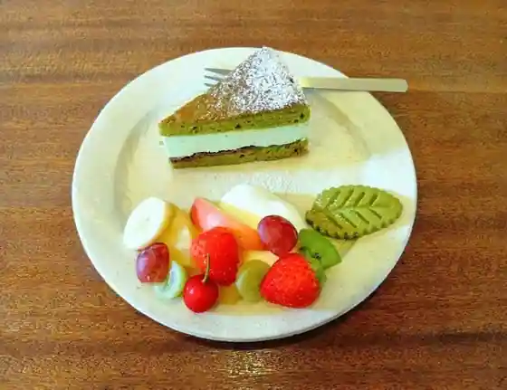
Mori No Kashiya Supika
カフェ ムク
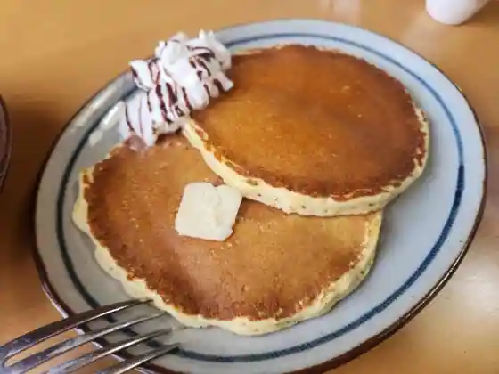
Cafe Muku
kiki cafe
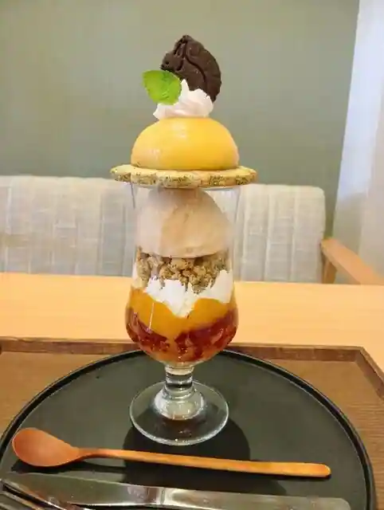
kiki cafe
モンマルトル亀屋
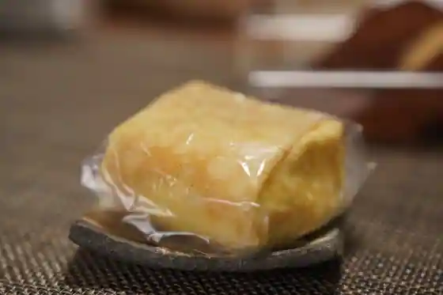
Monmarutoru Kameya
萬栄
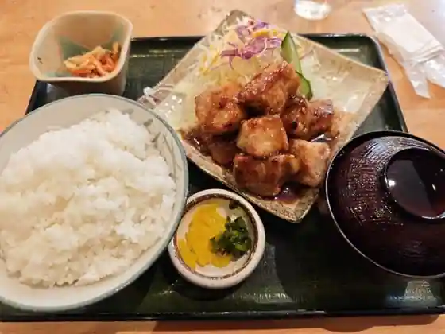
Man Sakae
南国風 古民家カフェ 恋するしっぽ。
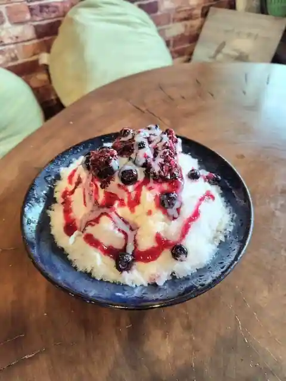
Nangoku Kaze Ko Minka Cafe Koisuru Shippo.
つる太郎
Tsuru Taro
鯛焼屋
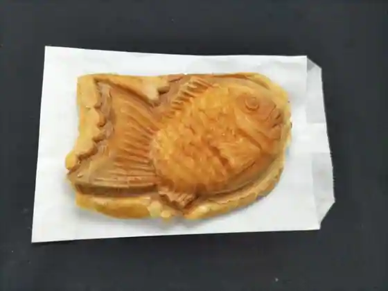
Taiyaki Ya
ミヤグチ氷店
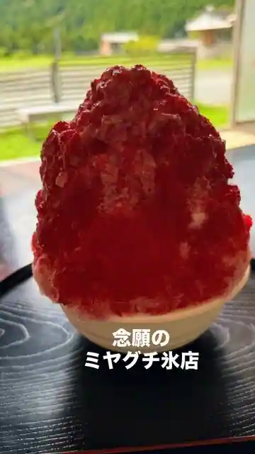
Miyaguchi Kori
ヒナタ
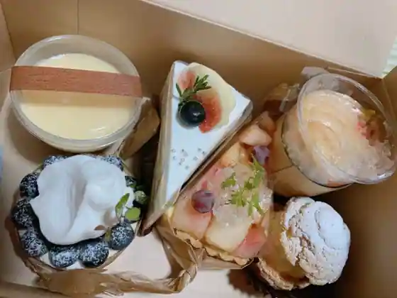
Hinata
カナエタ
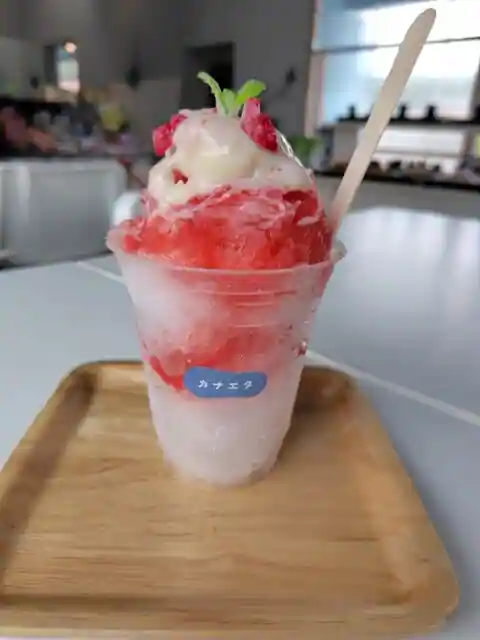
Kanaeta
Sights
River Ⅾrift Miyagawa
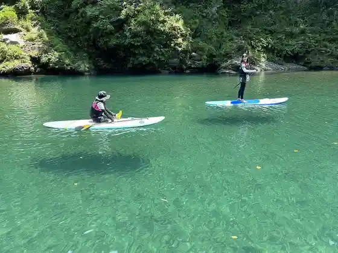
Miyagawa Joryu
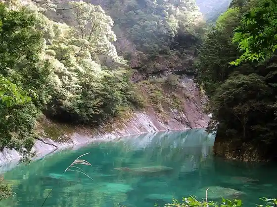
Odai Ya Ki I no Himawari
Mitsuse no Watashi
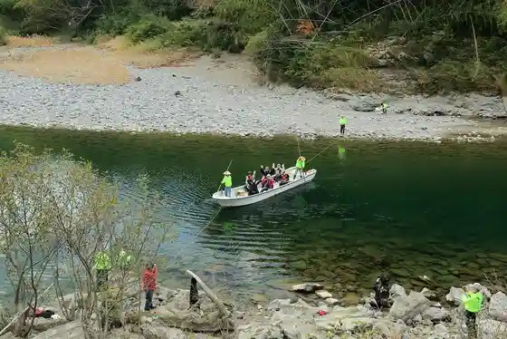
Ko Minka Yado Haru no Ya
Kyanpusutairu no Yado Kisekirei
Kyanpusutairu no Yado Yume Raku
Buruberii Odai
Chaya Ichi Gan Jizo Sakuramichi
Sakura no Sato Park
Mitsuse Tani Dam Cherry Blossoms
Sanjo Yama
Maruyama Park Mate Park
bistarai
Kaorimusubi (Thousand Leaves)
RocaRoca Akuteibitei
Okuma Miyama (Mei Gaku Shirokura Yama Kogamaruyama)
Takiya Hibara no Kawagishi Ganpeki Shokubutsu Gunraku
Osugi Tani no Osugi
Miyagawa Damu Mizumi
Mitsuse Tani Shrine
Osugi Gorge
Osugi Tani
Ue Mitsuse no Village Park
Aizu Toge no Yamazakura
Cho Ke Bridge
Odai Tourism Association (Oku Ise Terasu)
Uratani Oto Campground
AWA Rabo
Hinodegagaku
Awaya Koya
Momo no Kiyama no Ie
Roadside Station Oku Ise Odai
Roadside Station (Oku Ise Odai)
Shita Mitsuse Kakko Odori
Akagi Mine Rei Fu Yamadai Yo Tera
Mitsuse Torideato
Kawazoe Shrine (Gomikake no Miya)
Somon Yama
Osugi Tani Shizengaku Ko
Ao Toshu Ko
nijiiro
Odai Ritsu Library
SUP (Miyagawa)
Hokuso Mon Yama Lookout Kareraisu Shutcho Sabisu
Nanatsu Kama Taki
Do Kura Taki
Mitsuse Tani Damu Mizumi (Oku Ise Mizumi)
Wanko no Mori Asobi
Obuchi Tera no Sudajii
Rokuju Jin Taki
Kitabatake Gu Kyo Mitsuse Yakatato
Somon Yama Hokuso Mon Yama
Verde Autodoapuroguramu
Mori He Iku Nichi
Kisei Jidoshado (Oku Ise Parking Area) Nobori Sen
Kisei Jidoshado (Oku Ise Parking Area) Kudari Sen